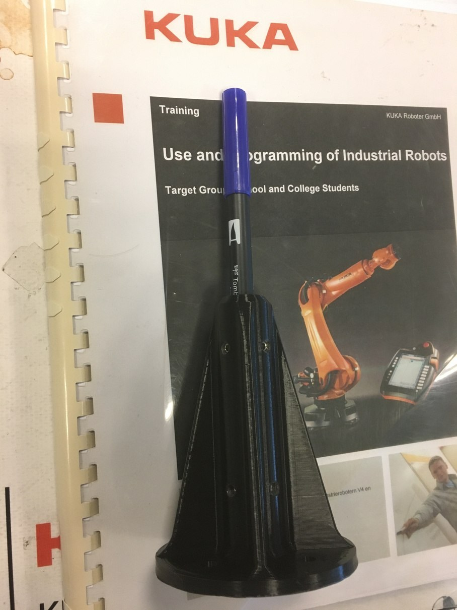

← All projects
KUKA KR20-3 Pen Plotter
Ozyegin University – RobArt | 2021 – 2022
Robot pen-plotter art

What?
- A second RobArt workshop on pen-plotter art: the robot arm draws 2D images.
- Designed and 3D printed a flange holding a pen on the KUKA KR20-3.